승강기기사 (2022-03-05 기출문제)
1과목: 승강기 개론
1. 엘리베이터의 전자-기계 브레이크 시스템에서 브레이크는 카가 정격속도로 정격하중의 몇 %를 싣고 하강방향으로 운행될 때 구동기를 정지시킬 수 있어야 하는가?
- 110
- 115
- 125
- 130
(정답률: 76%)

2. 권상 도르래·풀리 또는 드럼의 피치직경과 로프(벨트)의 공칭 직경 사이의 비율은 로프(벨트)의 가닥수와 관계없이 몇 배 이상이어야 하는가? (단, 주택용 엘리베이터는 제외한다.)
- 36
- 40
- 46
- 50
(정답률: 83%)
3. 유압식 엘리베이터의 장점으로 볼 수 없는 것은?
- 기계실의 배치가 자유롭다.
- 건물 꼭대기부분에 하중이 걸리지 않는다.
- 승강로 꼭대기 틈새가 작아도 좋다.
- 전동기의 소요동력이 작아진다.
(정답률: 75%)
4. 엘리베이터의 카에서 비상시 작동하는 비상등은 몇 lx 이상이어야 하는가?
- 2
- 5
- 10
- 20
(정답률: 81%)
5. 엘리베이터 조작방식에 대한 설명으로 옳은 것은?
- 먼저 눌러져 있는 호출에 응답하고, 그 운전이 완료될 때까지는 다른 호출에 일체 응답하지 않은 것을 단식 자동식이라 한다.
- 승강장의 누름버튼은 두 개가 있고, 동시에 기억시킬 수 있으며, 카는 그 진행방향의 카버튼과 승강장버턴에 응답하면서 승강하는 것을 군 관리방식이라 한다.
- 먼저 눌러져 있는 호출에 응답하고, 그 운전이 완료되기 전에도 다른 호출에 응답하는 것을 카 스위치 방식이라 한다.
- 승강장 누름버턴으 두 개인데 동시에 기억시킬 수 없으며, 카는 그 진행방향의 카버튼과 승강장버튼에 응답하는 것을 승합 전자동식이라 한다.
(정답률: 72%)
6. 소선의 강도에 의해서 E종으로 분류된 와이어로프의 소선의 공칭 인장강도는 몇 N/mm2인가?
- 1320
- 1470
- 1620
- 1770
(정답률: 68%)
7. 승객용 엘리베이터의 가이드 레일 규격이 “가이드 레일 ISO 7465-T85/A”라고 명시되어 있다. 여기서 “82”는 글미에서 어디 부분의 길이를 의미하는가? (단, 가이드 레일 규격은 KS B ISO 7465에 따른다.)
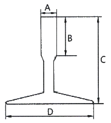
- A
- B
- C
- D
(정답률: 61%)
8. 에스컬레이터의 경사도는 기본적으로 30°를 초과하지 않아야 하는데 특별한 경우 경사도를 35°까지 증가시킬 수 있다. 이 경우 공칭속도는 몇 m/s 이하여야 하는가? (단, 층고는 6m 이하이다.)
- 0.5
- 0.75
- 1
- 1.5
(정답률: 70%)
9. 카 출입구의 하단에 설치하며 승강로와 카 바닥면의 간격을 일정치 이하로 유지함으로써, 카가 층과 층의 중간에 정지 시 승객이 아래층 방향의 엘리베이터 밖으로 나오려고 할 때 추락을 방지하는 것은?
- 가이드 슈(guide shoe)
- 에이프런(apron)
- 하부체대(plank)
- 브레이스 로드(brace rod)
(정답률: 76%)
10. 무빙워크의 경사도는 몇 ° 이내여야 하는가?
- 10
- 12
- 15
- 20
(정답률: 79%)
11. 소형 화물형 엘리베이터의 안전기준에 따라 카와 승강장문과의 거리는 몇 mm 이하여야 하는가?
- 10
- 20
- 30
- 40
(정답률: 59%)
12. 에너지 분산형 완충기의 요구조건에 대한 설명으로 옳지 않은 것은? (단, gn은 중력가속도를 의미한다.)
- 완충기의 가능한 총 행정은 정격속도 115%에 상응하는 중력 정지거리 이상이어야 한다.
- 카에 정격하중을 싣고, 정격속도의 115%의 속도로 자유낙하하여 완충기에 충돌할 때 평균 감속도는 1gn 이하여야 한다.
- 2.5 gn을 초과하는 감속도는 0.1초보다 길지 않아야 한다.
- 완충기 작동 후에는 영구적인 변형이 없어야 한다.
(정답률: 66%)
13. 승강기에 사용되는 유도전동기의 용량이 15kW, 전동기의 회전수가 1450rpm 이라면 이 전동기의 브레이크에 요구되는 제동토크는 약 몇 N·m인가? (단, 주어진 조건 이외에는 무시한다.)
- 74
- 99
- 144
- 202
(정답률: 47%)
14. 승강로의 일반적인 구조에 관한 설명으로 틀린 것은?
- 승강로 내에는 각층을 나타내는 표기가 있어야 한다.
- 승강로 내에 설치되는 돌출물은 안전상 지장이 없어야 한다.
- 엘리베이터의 균형추 또는 평형추는 카와 동일한 승강로에 있어야 한다.
- 밀폐식 승강로에는 어떠한 환기구나 통풍구가 있어서는 안 된다.
(정답률: 68%)
15. 엘리베이터의 기계실 출입문 크기 기준으로 옳은 것은? (단, 주택용 엘리베이터는 제외한다.)
- 폭 0.6m 이상, 높이 1.7m 이상
- 폭 0.7m 이상, 높이 1.8m 이상
- 폭 0.8m 이상, 높이 1.9m 이상
- 폭 0.9m 이상, 높이 2.0m 이상
(정답률: 80%)
16. 엘리베이터에서 카 내부의 유효높이는 일반적으로 몇 m 이상인가? (단, 주택용, 자동차용 엘리베이터는 제외한다.)
- 1.8
- 1.9
- 2.0
- 2.1
(정답률: 55%)
17. 엘리베이터가 “피난운전”시 특정 안전장치를 제외하고는 기본적으로 모두 작동상태여야 한다. 여기서 제외되는 안전장치는 다음 중 무엇인가?
- 문닫힘 안전장치
- 과부하 감지장치
- 추락방지 안전장치
- 상승과속 방지장치
(정답률: 68%)
18. 소방구조용 엘리베이터의 보조 전원공급장치는 얼마 이상 엘리베이터 운전이 가능하여야 하는가?
- 30분
- 1시간
- 1시간 30분
- 2시간
(정답률: 72%)
19. 카의 상승과속방지장치에 대한 설명으로 틀린 것은?
- 상승과속방지장치를 작동하기 위해 외부 에너지가 필요할 경우, 외부 에너지가 공급되지 않으면 엘리베이터는 정지 및 그 상태를 유지해야 한다.(압축 스프링 방식 제외)
- 상승과속방지장치의 복귀를 위해서는 작업자가 승강로에 들어가서 직접 작업하도록 해야 한다.
- 상승과속방지장치가 작동 후 복귀 후 엘리베이터가 정상 운행되기 위해서는 전문가(유지관리업자 등)의 개입이 요구되어야 한다.
- 상승과속방지장치는 빈 칸의 감속도가 정지단계 동안 1gn(중력가속도)을 초과하지 않아야 한다.
(정답률: 71%)
20. 유압식엘리베이터에서 유압장치의 보수, 점검 또는 수리 등을 할 때 주로 사용하기 위하여 설치하는 밸브는?
- 스톱 밸브
- 체크 밸브
- 안전 밸브
- 럽처 밸브
(정답률: 67%)
2과목: 승강기 설계
21. 엘리베이터의 설치 환경과 교통랑에 관한 설명이다. 옳지 않은 것은?
- 대중교통이 발달한 중심상가지역의 사무용 건물에는 아침 출근 시간의 교통량이 상대적으로 많다.
- 사무실이 밀집되어 있는 건물에는 점심시간이 같아서 정오시간의 교통량이 증가한다.
- 유연근무제, 시차출퇴근제의 확산은 출근시간의 교통량 집중도를 높였지만, 엘리베이터 하향방향의 교통량 집중은 감소시켰다.
- 병원의 경우는 일반 사무실과는 다르게 환자의 왕진 및 치료와 수술이 행해지는 오전시간에 교통량이 집중되거나, 또는 환자방문시간이나 교대근무가 발생하는 오후의 특정시간에 교통량이 집중될 수도 있다.
(정답률: 75%)
22. 엘리베이터의 적재중량(W)이 3500kg이고, 카 및 관련 부품들의 중량(Wp)이 2000kg일 때 하부체대에 발생하는 최대굽힘응력은 약 몇 MPa 인가? (단, 하부체대의 길이(L)은 3m, 하부체대의 총 단면계수는 498000mm3이며, 하부체대에 작용하는 최대 굽힘모멘트(M)는 다음과 같은 식(g는 중력가속도)을 적용한다.)
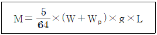
- 48.8
- 38.7
- 25.4
- 18.5
(정답률: 36%)
23. 엘리베이터의 승강로 내부, 기계류 공간 및 풀리실에서 직접적인 접촉에 의한 전기설비의 보호를 위해 케이스를 설치하고자 한다. 이는 얼마 이상의 보호등급을 제공해야 하는가?
- IP 2X
- IP 3X
- IP 4X
- IP 5X
(정답률: 48%)
24. 엘리베이터 브레이크 장치에서 총 제동토크는 180 N·m이고, 브레이크 드럼의 지름은 260mm, 접촉부 마찰계수는 0.35일 때 드럼과 브레이크 슈가 만나는 곳에서의 드럼의 반력은 약 몇 N 인가? (단, 브레이크 슈는 2개가 설치되어 있고, 양쪽 슈에서 작용하는 반력은 동일하며, 한쪽의 반력만 구한다.)
- 495
- 989
- 1483
- 1978
(정답률: 25%)
25. 소방구조용 엘리베이터의 보조 전원공급장치에 관한 설명으로 옳지 않은 것은?
- 정전 시 60초 이내에 엘리베이터 운행에 필요한 전력용량을 자동적으로 발생시키도록 하되 수동으로 전원을 작동시킬 수 있어야 한다.
- 소방구조용 엘리베이터의 주 전원공급과 보조 전원공급의 전선은 방화구획이 되어야 하고 서로 구분되어야 하며, 다른 전원공급장치와도 구분되어야 한다.
- 보조 전원공급장치는 방화구획 된 장소에 설치되어야 한다.
- 소방구조용 엘리베이터를 위한 보조 전원공급장치에는 충분한 전력 용량을 제공할 수 있는 자가발전기를 예외 없이 설치해야 한다.
(정답률: 46%)
26. 하중이 작용하는 방향에 의해 하중을 분류하였을 때 이에 해당되지 않는 것은?
- 정하중
- 인장하중
- 압축하중
- 전단하중
(정답률: 56%)
27. 엘리베이터용 가이드 레일에 관한 사항으로 틀린 것은?
- 엘리베이터의 정격하중에 관계가 있다.
- 대형 화물용 엘리베이터의 경우 하중을 적재할 때 발생되는 카의 회전 모멘트는 무시한다.
- 추락방지안전장치가 작동한 후에도 가이드 레일에는 좌굴이 없어야 한다.
- 레일 브래킷의 간격을 작게 하면 동일한 하중에 대하여 응력과 휨은 작아진다.
(정답률: 69%)
28. 적재중량1200kg, 카 자중 2600kg, 로프 한가닥의 파단하중 60kN, 로프 가닥수 5, 로프 자중 250kg, 균형도르래 중량 500kg인 엘리베이터의 로핑방식이 2:1 싱글 랩 로핑일 때, 이 엘리베이터의 로프의 안전율은 약 얼마인가? (단, 안전율의 산정 시 균형 도르래의 중량은 1/2을 적용한다.)
- 13.2
- 14.2
- 15.2
- 16.2
(정답률: 33%)
29. 기계실이 있는 승강기에서 승강기에 대한 주요 부품 중 설치 위치가 다른 한 가지는?
- 균형추
- 이동케이블
- 가이드레일
- 과속조절기
(정답률: 72%)
30. 엘리베이터 운전제어 중 전기적 비상운전 제어에 관한 설명으로 틀린 것은?
- 비상운전 제어 시 카 속도는 0.30m/s 이하이어야 한다.
- 전기적 비상운전은 버튼의 순간적인 누름에 의해서도 작동되어야 한다.
- 전기적 비상운전 스위치는 파이널 리미트 스위치를 무효화 시켜야 한다.
- 전기적 비상운전 스위치의 작동 후, 이 스위치에 의한 움직임을 제외한 모든 카 움직임은 방지되어야 한다.
(정답률: 44%)
31. 엘리베이터용 도어 인터로크에서 잠금장치에 대한 설명으로 옳지 않은 것은?
- 잠금장치 위치는 승강장 도어가 닫힐 때 승강장 측으로부터 접근할 수 있는 위치에 설치해야 한다.
- 안전 접점이 작동하기 전 잠김 상태를 유지하여야 하며, 외부 충격이나 진동에 의해 잠김 상태가 무효화되어서는 안 된다.
- 중력, 스프링, 영구자석에 의해 작동하며, 영구 자석에 의해 잠기는 방식에서는 열이나 충격에 의해 기능을 상실해서는 안 된다.
- 여러 짝의 조합에 의해 이루어진 도어에서는 특별한 경우를 제외하고는 각각의 도어(도어짝)에 잠금 장치를 설치하여야 한다.
(정답률: 49%)
32. 그림과 같이 아랫부분이 고정되고 위가 자유단으로 된 기둥의 상단에 하중 P가 작용한다. 이 때 좌굴이 발생하는 좌굴 하중은 기둥의 높이와 어떤 관계가 되는가? (단, 기둥의 굽힘강성(EI)는 일정하다.)
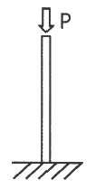
- 기둥의 높이의 제곱에 반비례한다.
- 기둥의 높이에 반비례한다.
- 기둥의 높이에 비례한다.
- 기둥의 높이의 제곱에 비례한다.
(정답률: 51%)
33. 에너지 분산형 완충기가 적용된 엘리베이터의 정격속도가 80m/min이다. 규정된 시험조건으로 완충기에 충돌할 때 완충기의 행정은 약 몇 mm 이상이어야 하는가?(문제 오류로 가답안 발표시 4번으로 발표되었지만 확정답안 발표시 전항 정답 처리 되었습니다. 여기서는 가답안인 4번을 누르면 정답 처리 됩니다.)
- 202
- 188
- 172
- 158
(정답률: 68%)
34. 완충기에 사용하는 코일 스프링을 설계하고자 한다. 스프링에 작용하는 하중은 18kN, 스프링 소선의 지름은 26mm, 코일의 평균지름은 122mm일 때 이 스프링에 발생하는 전단응력은 약 몇 MPa 인가? (단, 응력수정계수는 1.33으로 한다.)
- 352
- 386
- 423
- 469
(정답률: 39%)
35. 엘리베이터 운행을 위해 전동기에서 요구되는 최대 토크가 42 N·m, 이 때 전동기 회전수는 2500rpm 이다. 이 전동기의 전체 효율이 약 75% 이면 전동기에서 요구되는 출력은 약 몇 kW 인가?
- 8.9
- 10.8
- 12.4
- 14.7
(정답률: 25%)
36. 승강기 설비계획을 할 때 고려해야 할 사항에 해당되지 않는 것은?
- 교통량 계산을 하여 그 건물의 교통수요에 적합하고 충분한 대수일 것
- 이용자의 대기사긴이 허용치 이하가 되도록 고려할 것
- 여러 대를 설치할 경우 가능한 건물 가운데로 배치할 것
- 용도에 관계없이 반드시 서비스층의 분할을 적용할 것
(정답률: 70%)
37. 기어 방식의 권상기에서 웜기어와 비교하여 헬리컬 기어의 효율적인 소음을 옳게 설명한 것은?
- 효율은 높고 소음도 크다.
- 효율은 높고 소음도 작다.
- 효율은 낮고 소음도 크다.
- 효율은 낮고 소음도 작다.
(정답률: 64%)
38. 승강로 최상층의 승강장 바닥면에서 승강로의 상부(기계실 바닥 슬래브 하부면)까지의 수직거리를 무엇이라고 하는가?
- 오버헤드
- 꼭대기 틈새
- 주행여유
- 천장여유
(정답률: 66%)
39. 승강로 벽의 내측과 카 문턱, 카 문틀 또는 카문의 닫히는 모서리 사이의 수평거리는 승강로 전체에 걸쳐서 기본적으로 몇 m 이하여야 하는가? (단, 특별한 경우를 제외한 일반적인 조건을 말한다.)
- 0.1
- 0.12
- 0.15
- 0.2
(정답률: 65%)
40. 유압식 엘리베이터의 유압 제어 및 안전장치와 관련하여 릴리프 밸브를 압력을 전 부하 압력의 몇 % 까지 제한하도록 맞추어 조절되어야 하는가?
- 125
- 130
- 135
- 140
(정답률: 54%)
3과목: 일반기계공학
41. 회전수 1000rpm으로 716.2 N·m의 비틀림 모멘트를 전달하는 회전축의 전달 동력(kW)은?
- 약 749.9
- 약 75.0
- 약 119
- 약 11.9
(정답률: 36%)
42. 균일 단면 봉재에 작용하는 수직응력에 의한 탄성에너지를 구하는 식으로 옳은 것은? (단, 탄성에너지 U, 인장하중 P, 봉재길이 L, 세로탄성계수 E, 변형량 δ, 단면적은 A 이다.)
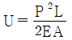
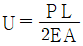
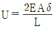
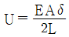
(정답률: 41%)
43. 셀 몰드법(Shell mold process)에 대한 설명으로 틀린 것은?
- 미숙련공도 작업이 가능하다.
- 작업공정을 자동화하기 쉽다.
- 보통 소량생산 방식에 사용된다.
- 짧은 시간 내에 정도가 높은 주물을 만들 수 있다.
(정답률: 63%)
44. 나사에서 리드각은 나사의 골지름, 유효지름 및 바깥지름에서 각각 다르고 골지름에서 가장 크다. 나사의 비틀림각이 30°이면 리드각은?
- 30°
- 45°
- 60°
- 90°
(정답률: 53%)
45. 주응력에 대한 설명으로 틀린 것은?
- 주응력은 전단응력이다.
- 평면응력에서 주응력은 2개이다.
- 주평면 상태하의 응력을 의미한다.
- 주응력 상태에서 수직응력은 최대와 최소를 나타낸다.
(정답률: 34%)
46. 공기압 기술에 대한 특징으로 틀린 것은?
- 작동 매체를 쉽게 구할 수 있다.
- 정밀한 위치 및 속도제어가 가능하다.
- 동력 전달이 간단하며 장거리 이송이 쉽다.
- 폭발과 인화의 위험이 적으며 환경오염이 없다.
(정답률: 34%)
47. 용접부의 시험을 파괴시험과 비파괴시험으로 분류할 때 비파괴시험이 아닌 것은?
- 인장시험
- 음향시험
- 누설시험
- 형광시험
(정답률: 52%)
48. 모듈 5, 잇수 52인 표준 스퍼기어의 외경(mm)은?
- 250
- 260
- 270
- 280
(정답률: 33%)
49. 체결용 기계요소인 코터에 대한 설명으로 틀린 것은?
- 코터의 자립조건에서 마찰각을 ρ, 기울기를 α라 할 때에 한쪽 기울기의 경우는 α≦2ρ 이어야 한다.
- 코터의 기울기는 한쪽 기울기와 양쪽 기울기가 있다.
- 코터이음에서 코터는 주로 비틀림 모멘트를 받는다.
- 코터는 로드와 소켓을 연결하는 기계요소이다.
(정답률: 40%)
50. 냉간가공의 특징으로 틀린 것은?
- 정밀한 형상의 가공면을 얻을 수 있다.
- 가공경화로 강도가 증가한다.
- 가공면이 아름답다.
- 연신율이 증가한다.
(정답률: 56%)
51. Ti의 특성에 대한 설명으로 틀린 것은?
- 열전도율이 높다.
- 내식성이 우수하다.
- 비중은 약 4.5 정도이다.
- Fe 보다 가벼운 경금속에 속한다.
(정답률: 48%)
52. 주철의 물리적, 기계적 성질에 대한 설명으로 틀린 것은?
- 절삭성 및 내마모성이 우수하다.
- 강에 비해 일반적으로 인장강도와 충격값이 우수하다.
- 탄소함유량이 약 2~6.7% 정도인 것을 주철이라 한다.
- 주조성이 우수하여 복잡한 형상으로 제작이 가능하다.
(정답률: 36%)
53. 탄성한도 이내에서 가로 변형률과 세로 변형률과의 비를 의미하는 용어는?
- 곡률
- 세장비
- 단면수축률
- 프와송 비
(정답률: 64%)
54. 연강인 공작물 재질이 드릴 작업을 하려고 할 때 가장 적합한 드릴의 선단각은?
- 70°
- 118°
- 130°
- 150°
(정답률: 46%)
55. 그림과 같이 동일한 재료의 중실축과 중공축에 각각 TA, TB의 토크가 작용할 때 전달할 수 있는 토크 TB는 TA의 몇 배인가?
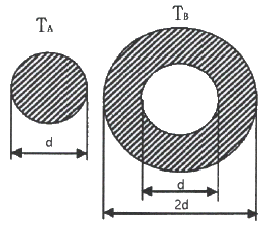
- 6.0
- 6.5
- 7.0
- 7.5
(정답률: 31%)
56. 0.01mm까지 측정할 수 있는 마이크로미터에서 나사의 피치와 딤블의 눈금에 대한 설명으로 옳은 것은?
- 피치는 0.25mm 이고, 딤블은 50등분이 되어 있다.
- 피치는 0.5mm 이고, 딤블은 100등분이 되어 있다.
- 피치는 0.5mm 이고, 딤블은 50등분이 되어 있다.
- 피치는 1mm 이고, 딤블은 50등분이 되어 있다.
(정답률: 58%)
57. 회전수 1350rpm으로 회전하는 용적형 펌프의 송출량 32ℓ/min, 송출압력이 40 kgf/cm2이다. 이 때 소비 동력이 3kW 라면 이 펌프의 전 효율은?
- 60.1%
- 69.7%
- 75.3%
- 81.7%
(정답률: 40%)
58. 제동장치에서 단식 블록 브레이크에 제동력에 대한 설명으로 옳은 것은?
- 제동 토크에 반비례한다.
- 마찰 계수에 반비례한다.
- 브레이크 드럼의 지름에 비례한다.
- 브레이크 드럼과 블록사이의 수직력에 비례한다.
(정답률: 52%)
59. 크거나 두꺼운 재료를 담금질했을 때 외부는 냉각속도가 빠르고 내부는 냉각속도가 느려서 재료의 내부로 들어갈수록 경도가 저하되는 현상은?
- 노치효과
- 질량효과
- 파커라이징
- 치수효과
(정답률: 43%)
60. 유압 및 공기압 용어(KS B 0120)와 관련하여 다음이 설명하는 것은?
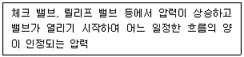
- 크래킹 압력
- 리시트 압력
- 오버라이드 압력
- 서지 압력
(정답률: 27%)
4과목: 전기제어공학
61. 유량, 압력, 액위, 농도, 효율 등의 플랜트나 생산공정 중의 상태를 제어량으로 하는 제어는?
- 프로그램제어
- 프로세스제어
- 비율제어
- 자동조정
(정답률: 45%)
62. 5kVA, 3000/20V의 변압기가 단락시험을 통한 임피던스 전압이 100V, 동손이 100W라 할 때 퍼센트 저항강하는 몇 % 인가?
- 2
- 3
- 4
- 5
(정답률: 16%)
63. 다음 중 2차 전지에 속하는 것은?
- 망간건전지
- 공기전지
- 수은전지
- 납축전지
(정답률: 31%)
64. 다음 블록선도와 등가인 블록선도로 알맞은 것은?
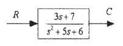
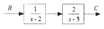
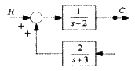
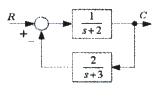
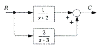
(정답률: 24%)
65. 60Hz, 4극, 슬립 6%인 유도전동기를 어느 공장에서 운전하고자 할 때 예상되는 회전수는 약 몇 rpm 인가?
- 240
- 720
- 1690
- 1800
(정답률: 51%)
66. 그림과 같은 계전기 접점회로의 논리식은?
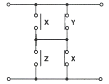
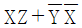
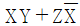
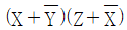
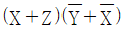
(정답률: 40%)
67. 그림에 해당하는 함수를 라플라스 변환하면?
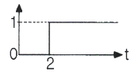
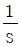
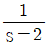
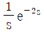
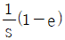
(정답률: 32%)
68. 자기회로에서 도자율(permeance)에 대응하는 전기회로의 요소는?
- 릴럭턴스
- 컨던턱스
- 정전용량
- 인덕턴스
(정답률: 37%)
69. 어떤 회로에 정현파 전압을 가하니 90° 위상이 뒤진 전류가 흘렸다면 이 회로의 부하는?
- 저항
- 용량성
- 무부하
- 유도성
(정답률: 34%)
70. 일정 전압의 직류전원 V에 저항 R을 접속하니 정격전류 I가 흘렀다. 정격전류 I의 130%를 흘리기 위해 필요한 저항은 약 얼마인가?
- 0.6R
- 0.77R
- 1.3R
- 3R
(정답률: 40%)
71. 3상 회로에 있어서 대칭분 전압이 V0 = -8+j3(V), V1 = 6-j8(V), V2 = 8+j12(V) 일 때 a상의 전압(V)는?
- 6+j7
- 8+j6
- 3+j12
- 6+j12
(정답률: 27%)
72. 피드백제어계 중 물체의 위치, 방위, 자세 등의 기계적 변위를 제어량으로 하는 제어는?
- 서보기구(servo mechanism)
- 프로세스제어(process control)
- 자동조정(automatic regulation)
- 프로그램제어(program control)
(정답률: 58%)
73. 다음 중 일반적으로 중저항의 범위에 해당되는 것은?
- 500Ω ~ 100MΩ의 저항
- 100Ω ~ 100MΩ의 저항
- 1Ω ~ 10MΩ의 저항
- 1Ω ~ 1MΩ의 저항
(정답률: 37%)
74. SCR에 관한 설명으로 틀린 것은?
- PNPN 소자이다.
- 스위칭 소자이다.
- 양방향성 사이리스터이다.
- 직류나 교류의 전력제어용으로 사용된다.
(정답률: 51%)
75. v = Vmsin(wt+30°)[V]와 i = Imcos(wt-60°)[A]와의 위상차는?
- 0°
- 30°
- 60°
- 90°
(정답률: 24%)
76. 분류기의 저항(Rs)은? (단,
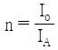
이다.)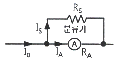
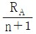
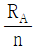
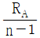
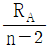
(정답률: 37%)
77. 아래 그림의 논리회로와 같은 진리값을 NAND소자만으로 구성하여 나타내려면 NAND소자는 최소 몇 개가 필요한가?
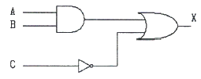
- 1
- 2
- 3
- 5
(정답률: 52%)
78. V(V)로 충전한 C(F)의 콘덴서를
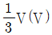
까지 방전하여 사용했을 때, 사용된 에너지(J)는?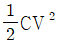
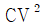
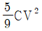
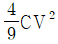
(정답률: 34%)
79. 특성방정식이 근이 복소평면의 좌반면에 있으면 이 계는?
- 불안정하다.
- 조건부 안정이다.
- 반안정이다.
- 안정하다.
(정답률: 33%)
80. 그림과 같은 단자 1, 2 사이의 계전기 접점회로 논리식은?
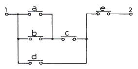
- {(a+b)d+c}e
- {(ab+c)d}+e
- {(a+b)c+d}e
- (ab+d)c+e
(정답률: 57%)